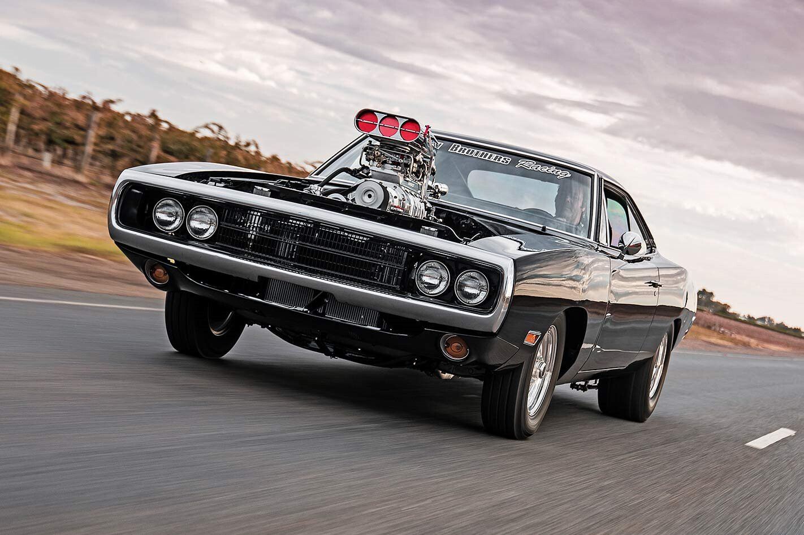
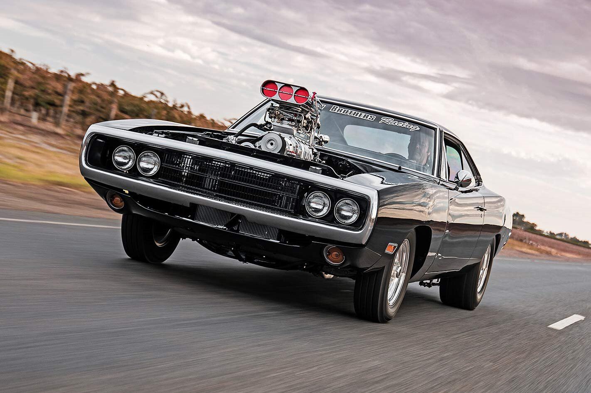

The Fast and the Furious
Photo Collection
The "Fast and Furious" franchise is a series of action-packed films centered around street racing, heists, and high-stakes adventures.
Beginning with "The Fast and the Furious" in 2001, the storyline follows Dominic Toretto (Vin Diesel), a skilled street racer and mechanic,
and his close-knit crew as they navigate through various challenges, often involving law enforcement, rival gangs, and international criminals.
Throughout the series, themes of family, loyalty, and adrenaline-pumping action dominate, evolving from street racing in Los Angeles to global heists and
espionage missions across different continents. The franchise expands with each installment, introducing new characters, complex storylines, and jaw-dropping stunts that have become synonymous with the series.


 
